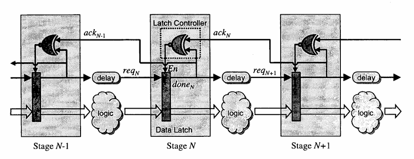

3.3.3 Mousetrap#
The so-called Mousetrap pipeline introduced by [Mouse01, Mouse07] uses the 2-phase bundled-data protocol, where the req and ack information is encoded via signal transitions.
The pipelines we have looked at so far all used some variation of the Muller pipeline to implement the handshakes. Here, the control structure of the pipeline is different and consists only of basic XNOR gates and latches. Figure below shows the general pipeline structure of a Mousetrap. It consists of a latch controller that handles the handshakes and controls the data flow between the data latches. The data latches separate the different pipeline stages and are either transparent, allowing data to flow between stages, or opaque, blocking the data from flowing.
{kind=link}

Figure 3.8: Pipeline structure of a “Mousetrap” circuit [Mouse01]
At the start, all req and ack signals are low, leading to a logical 1 output at the XNOR gates, making all data latches transparent. Once new data together with a req signal enters a stage, the transition in req causes the XNOR gate to output a logical 0, blocking the connected data latch from letting in new requests. Only when the next stage acknowledges the request, by making a transition in the ack signal, does the XNOR gate output 1 and allow new data into the stage.Generally, the Nth stage in the pipeline takes three actions once it receives new data:
The received data is passed along to the next stage N+1 together with a transition on the request signal \(req_{N+1}\).
The previous stage N−1 is acknowledged via the \(ack_{N−1}\) signal, allowing it to process new data.
The current stage is blocked from receiving new data until it receives its acknowledgement \(ack_N\) from the next stage N+1.
Try to comprehend the functionality of the pipeline through simulation: